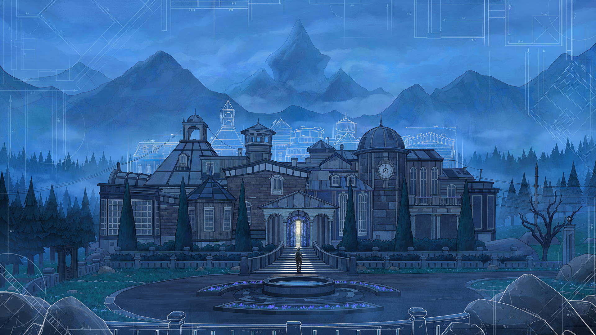

Blue Prince é um jogo eletrônico de aventura e quebra-cabeça com elementos de roguelike lançado em 10 de abril de 2025, desenvolvido pela Dogubomb e publicado pela Raw Fury. No jogo, o desafio é explorar uma mansão cujos cômodos mudam constantemente, sendo construídos a partir de cartas sorteadas aleatoriamente. Atualmente, o jogo está disponível para PC, Playstation 5, Xbox Series X/S.
O jogador assume o papel de Simon P. Jones, herdeiro do Monte Holly, uma misteriosa mansão deixada por seu falecido tio-avô. No entanto, há uma condição curiosa no testamento: Simon só poderá reivindicar a propriedade se conseguir encontrar o 46º cômodo secreto dentro de um único dia após entrar na mansão. Caso falhe, a arquitetura da casa se reorganiza completamente durante a noite, forçando Simon a recomeçar sua busca do zero no dia seguinte.
O lançamento de Blue Prince para Windows recebeu "aclamação universal" segundo o agregador de análises Metacritic, com uma pontuação média de 92/100.
Blue Prince foi desenvolvido principalmente por Tonda Ros. Ele foi inspirado pelo documentário Indie Game: The Movie, que lhe mostrou que era possível criar jogos completos com um conjunto simples de ferramentas de desenvolvimento. Depois de jogar os videojogos Gone Home e The Witness, Ros se inspirou para testar suas ideias com o motor de jogo Unity
Por volta de 2016, Tonda Ros começou a experimentar o desenvolvimento de um protótipo, com a intenção inicial de dedicar cerca de seis meses ao projeto. No entanto, à medida que suas ideias ganhavam forma, decidiu deixar seu emprego na área de desenvolvimento comercial para focar completamente no jogo. Ros acabou investindo oito anos no aprimoramento do projeto.
O jogo estava completamente funcional em 2021, momento em que Tonda Ros dedicou a maior parte do tempo restante de desenvolvimento ao equilíbrio da jogabilidade. Ele se concentrou em garantir que as dicas para os quebra-cabeças e a estrutura do jogo fossem apresentadas de maneira acessível em diversos pontos, além de torná-lo mais complexo, expandindo os mistérios e aprofundando a mitologia que a pessoa jogadora poderia descobrir ao longo da experiência.
Tonda Ros mencionou que a inspiração para Blue Prince veio de jogos de cartas e de tabuleiro que envolviam o processo de drafting, onde as pessoas que jogam escolhem uma carta ou token aleatório de um conjunto, como em Magic: The Gathering e Agricola. Ele também creditou os livros de mistério interativos, que ofereciam prêmios aos leitores que conseguissem resolver quebra-cabeças complexos, citando exemplos como Masquerade , de Kit Williams, e Maze: Solve the World's Most Challenging Puzzle, de Christopher Manson. Ros contratou Manson para desenvolver um dos quebra-cabeças de Blue Prince.